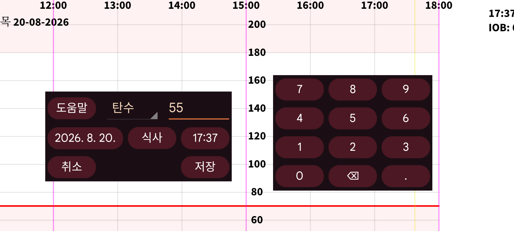

ar de es hi it ja ko nl pl ru tr uk uz zh en
새 입력값 을 사용하면 임의의 레이블에 연결된 숫자를 입력할 수 있습니다. 레이블은 왼쪽 메뉴→설정→입력값 레이블에서 설정할 수 있습니다. 특정 레이블로 입력한 입력값 은 레이블에서 정한 높이로 그래프에 표시됩니다.
나중에 입력값을 길게 눌러 변경할 수 있습니다. 왼쪽 가운데 메뉴→목록의 입력값 목록에서 선택할 수도 있습니다.
인슐린 투여량 데이터를 NovoPen® 6 또는 NovoPen Echo® Plus NFC 펜을 스캔하여 받을 수도 있습니다. 스캔 후 Juggluco에서 투여량을 어느 레이블 아래 저장할지 변경하고, 특정 날짜와 시간 이후 의 투여량만 받도록 제한할 수 있습니다. 펜 메모리에 수백 개의 투여량이 있으면 Juggluco가 NFC로 모두 받는 데 30초 이상 걸릴 수 있습니다.
일부 혈당 측정기는 손끝 채혈 혈당 측정값을 Bluetooth로 Juggluco에 보낼 수 있습니다. 왼쪽 메뉴→설정→데이터 교환→ 혈당 측정기를 참조하십시오.
왼쪽 메뉴→설정→입력값 레이블 에서는 식사의 탄수화물을 입력할 레이블도 지정합니다. 새 입력값에서 이 레이블에는 식사 버튼이 표시됩니다. 이 식사 버튼을 누르면 재료를 조합해 식사를 만드는 화면이 열립니다. 총 탄수화물 함량을 자동으로 계산합니다. 반대로 원하는 탄수화물 양을 입력하면 한 재료가 얼마나 필요한지도 Juggluco가 계산할 수 있습니다.
제외: 혈당이 상승 또는 하강 중이거나 센서가 아직 준비 중인 경우 혈당 측정값을 보정에서 제외합니다.